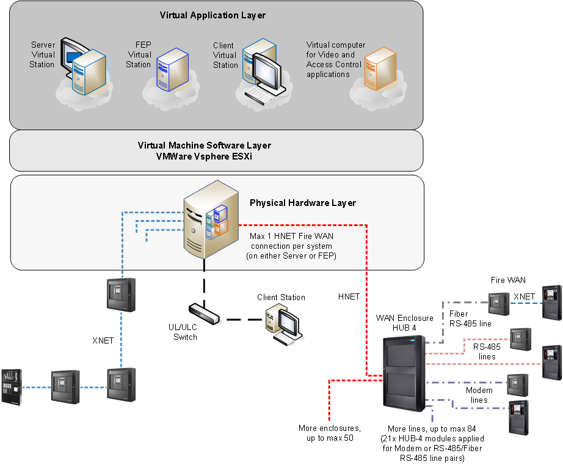
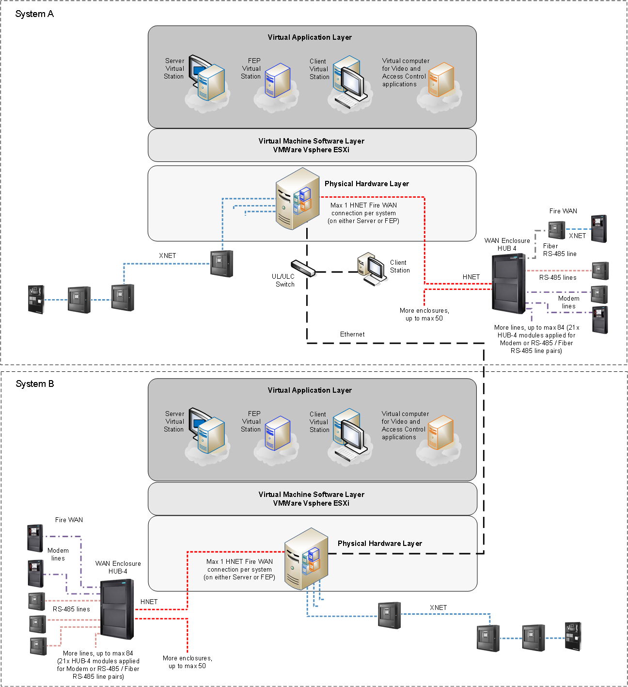

Fire WAN Virtual Machine Architectures
Fire WAN and XNET System
You can install Desigo CC on virtual machines. The physical stations are connected to the fire networks.
The Desigo CC virtual stations in the upper section of the following diagram can be any of the stations shown in the other architecture diagrams.
Note however that there must be one physical computer per virtual machine.

HNET RS-485 line: Class B or Class X | |
HUB4 RS-485 line: Class B or Class X | |
HUB4 Modem line: Class B | |
HUB4 RS-485 over Fiber in Single Mode (Class B) or Multi Mode (Class X) | |
| XNET RS-485: Class B or Class X |

NOTE: Class A = DCLA; Class B = DCLB; Class X = DCLC
Fire WAN and XNET Distributed System
Distributed Desigo CC systems can also be installed on virtual machines and connected to fire networks.

| Ethernet wiring in UL/ULC listed conduits, up to 20 ft (UL) or 18 m (ULC) between stations and network switches |
| Ethernet over Fiber in Single Mode (Class B) or Multi Mode (Class X) |
HNET RS-485 line: Class B or Class X | |
HUB4 RS-485 line: Class B or Class X | |
HUB4 Modem line: Class B | |
HUB4 RS-485 over Fiber in Single Mode (Class B) or Multi Mode (Class X) | |
| XNET RS-485: Class B or Class X |